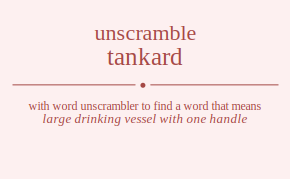

The word found after unscrambling tankard means that large drinking vessel with one handle, .

The word found after unscrambling tankard means that large drinking vessel with one handle, .
You can also find solutions for different combinations of letters in tankard like tankard tankadr tankrad tankrda tankdar tankdra tanakrd tanakdr tanarkd tanardk tanadkr tanadrk tanrkad tanrkda tanrakd tanradk tanrdka tanrdak tandkar tandkra tandakr tandark tandrka tandrak taknard taknadr taknrad taknrda takndar takndra takanrd takandr takarnd takardn takadnr takadrn takrnad takrnda takrand takradn takrdna takrdan takdnar takdnra takdanr takdarn takdrna takdran taankrd taankdr taanrkd taanrdk taandkr taandrk taaknrd taakndr taakrnd taakrdn taakdnr taakdrn taarnkd taarndk taarknd taarkdn taardnk taardkn taadnkr taadnrk taadknr taadkrn taadrnk taadrkn tarnkad tarnkda tarnakd tarnadk tarndka tarndak tarknad tarknda tarkand tarkadn tarkdna tarkdan tarankd tarandk taraknd tarakdn taradnk taradkn tardnka tardnak tardkna tardkan tardank tardakn tadnkar tadnkra tadnakr tadnark tadnrka tadnrak tadknar tadknra tadkanr tadkarn tadkrna tadkran tadankr tadanrk tadaknr tadakrn tadarnk tadarkn tadrnka tadrnak tadrkna tadrkan tadrank tadrakn tnakard tnakadr tnakrad tnakrda tnakdar tnakdra tnaakrd tnaakdr tnaarkd tnaardk tnaadkr tnaadrk tnarkad tnarkda tnarakd tnaradk tnardka tnardak tnadkar tnadkra tnadakr tnadark tnadrka tnadrak tnkaard tnkaadr tnkarad tnkarda tnkadar tnkadra tnkaard tnkaadr tnkarad tnkarda tnkadar tnkadra tnkraad tnkrada tnkraad tnkrada tnkrdaa tnkrdaa tnkdaar tnkdara tnkdaar tnkdara tnkdraa tnkdraa tnaakrd tnaakdr tnaarkd tnaardk tnaadkr tnaadrk tnakard tnakadr tnakrad tnakrda tnakdar tnakdra tnarakd tnaradk tnarkad tnarkda tnardak tnardka tnadakr tnadark tnadkar tnadkra tnadrak tnadrka tnrakad tnrakda tnraakd tnraadk tnradka tnradak tnrkaad tnrkada tnrkaad tnrkada tnrkdaa tnrkdaa tnraakd tnraadk tnrakad tnrakda tnradak tnradka tnrdaka tnrdaak tnrdkaa tnrdkaa tnrdaak tnrdaka tndakar tndakra tndaakr tndaark tndarka tndarak tndkaar tndkara tndkaar tndkara tndkraa tndkraa tndaakr tndaark tndakar tndakra tndarak tndarka tndraka tndraak tndrkaa tndrkaa tndraak tndraka tkanard tkanadr tkanrad tkanrda tkandar tkandra tkaanrd tkaandr tkaarnd tkaardn tkaadnr tkaadrn tkarnad tkarnda tkarand tkaradn tkardna tkardan tkadnar tkadnra tkadanr tkadarn tkadrna tkadran tknaard tknaadr tknarad tknarda tknadar tknadra tknaard tknaadr tknarad tknarda tknadar tknadra tknraad tknrada tknraad tknrada tknrdaa tknrdaa tkndaar tkndara tkndaar tkndara tkndraa tkndraa tkaanrd tkaandr tkaarnd tkaardn tkaadnr tkaadrn tkanard tkanadr tkanrad tkanrda tkandar tkandra tkarand tkaradn tkarnad tkarnda tkardan tkardna tkadanr tkadarn tkadnar tkadnra tkadran tkadrna tkranad tkranda tkraand tkraadn tkradna tkradan tkrnaad tkrnada tkrnaad tkrnada tkrndaa tkrndaa tkraand tkraadn tkranad tkranda tkradan tkradna tkrdana tkrdaan tkrdnaa tkrdnaa tkrdaan tkrdana tkdanar tkdanra tkdaanr tkdaarn tkdarna tkdaran tkdnaar tkdnara tkdnaar tkdnara tkdnraa tkdnraa tkdaanr tkdaarn tkdanar tkdanra tkdaran tkdarna tkdrana tkdraan tkdrnaa tkdrnaa tkdraan tkdrana taankrd taankdr taanrkd taanrdk taandkr taandrk taaknrd taakndr taakrnd taakrdn taakdnr taakdrn taarnkd taarndk taarknd taarkdn taardnk taardkn taadnkr taadnrk taadknr taadkrn taadrnk taadrkn tanakrd tanakdr tanarkd tanardk tanadkr tanadrk tankard tankadr tankrad tankrda tankdar tankdra tanrakd tanradk tanrkad tanrkda tanrdak tanrdka tandakr tandark tandkar tandkra tandrak tandrka takanrd takandr takarnd takardn takadnr takadrn taknard taknadr taknrad taknrda takndar takndra takrand takradn takrnad takrnda takrdan takrdna takdanr takdarn takdnar takdnra takdran takdrna tarankd tarandk taraknd tarakdn taradnk taradkn tarnakd tarnadk tarnkad tarnkda tarndak tarndka tarkand tarkadn tarknad tarknda tarkdan tarkdna tardank tardakn tardnak tardnka tardkan tardkna tadankr tadanrk tadaknr tadakrn tadarnk tadarkn tadnakr tadnark tadnkar tadnkra tadnrak tadnrka tadkanr tadkarn tadknar tadknra tadkran tadkrna tadrank tadrakn tadrnak tadrnka tadrkan tadrkna trankad trankda tranakd tranadk trandka trandak traknad traknda trakand trakadn trakdna trakdan traankd traandk traaknd traakdn traadnk traadkn tradnka tradnak tradkna tradkan tradank tradakn trnakad trnakda trnaakd trnaadk trnadka trnadak trnkaad trnkada trnkaad trnkada trnkdaa trnkdaa trnaakd trnaadk trnakad trnakda trnadak trnadka trndaka trndaak trndkaa trndkaa trndaak trndaka trkanad trkanda trkaand trkaadn trkadna trkadan trknaad trknada trknaad trknada trkndaa trkndaa trkaand trkaadn trkanad trkanda trkadan trkadna trkdana trkdaan trkdnaa trkdnaa trkdaan trkdana traankd traandk traaknd traakdn traadnk traadkn tranakd tranadk trankad trankda trandak trandka trakand trakadn traknad traknda trakdan trakdna tradank tradakn tradnak tradnka tradkan tradkna trdanka trdanak trdakna trdakan trdaank trdaakn trdnaka trdnaak trdnkaa trdnkaa trdnaak trdnaka trdkana trdkaan trdknaa trdknaa trdkaan trdkana trdaank trdaakn trdanak trdanka trdakan trdakna tdankar tdankra tdanakr tdanark tdanrka tdanrak tdaknar tdaknra tdakanr tdakarn tdakrna tdakran tdaankr tdaanrk tdaaknr tdaakrn tdaarnk tdaarkn tdarnka tdarnak tdarkna tdarkan tdarank tdarakn tdnakar tdnakra tdnaakr tdnaark tdnarka tdnarak tdnkaar tdnkara tdnkaar tdnkara tdnkraa tdnkraa tdnaakr tdnaark tdnakar tdnakra tdnarak tdnarka tdnraka tdnraak tdnrkaa tdnrkaa tdnraak tdnraka tdkanar tdkanra tdkaanr tdkaarn tdkarna tdkaran tdknaar tdknara tdknaar tdknara tdknraa tdknraa tdkaanr tdkaarn tdkanar tdkanra tdkaran tdkarna tdkrana tdkraan tdkrnaa tdkrnaa tdkraan tdkrana tdaankr tdaanrk tdaaknr tdaakrn tdaarnk tdaarkn tdanakr tdanark tdankar tdankra tdanrak tdanrka tdakanr tdakarn tdaknar tdaknra tdakran tdakrna tdarank tdarakn tdarnak tdarnka tdarkan tdarkna tdranka tdranak tdrakna tdrakan tdraank tdraakn tdrnaka tdrnaak tdrnkaa tdrnkaa tdrnaak tdrnaka tdrkana tdrkaan tdrknaa tdrknaa tdrkaan tdrkana tdraank tdraakn tdranak tdranka tdrakan tdrakna atnkard atnkadr atnkrad atnkrda atnkdar atnkdra atnakrd atnakdr atnarkd atnardk atnadkr atnadrk atnrkad atnrkda atnrakd atnradk atnrdka atnrdak atndkar atndkra atndakr atndark atndrka atndrak atknard atknadr atknrad atknrda atkndar atkndra atkanrd atkandr atkarnd atkardn atkadnr atkadrn atkrnad atkrnda atkrand atkradn atkrdna atkrdan atkdnar atkdnra atkdanr atkdarn atkdrna atkdran atankrd atankdr atanrkd atanrdk atandkr atandrk ataknrd atakndr atakrnd atakrdn atakdnr atakdrn atarnkd atarndk atarknd atarkdn atardnk atardkn atadnkr atadnrk atadknr atadkrn atadrnk atadrkn atrnkad atrnkda atrnakd atrnadk atrndka atrndak atrknad atrknda atrkand atrkadn atrkdna atrkdan atrankd atrandk atraknd atrakdn atradnk atradkn atrdnka atrdnak atrdkna atrdkan atrdank atrdakn atdnkar atdnkra atdnakr atdnark atdnrka atdnrak atdknar atdknra atdkanr atdkarn atdkrna atdkran atdankr atdanrk atdaknr atdakrn atdarnk atdarkn atdrnka atdrnak atdrkna atdrkan atdrank atdrakn antkard antkadr antkrad antkrda antkdar antkdra antakrd antakdr antarkd antardk antadkr antadrk antrkad antrkda antrakd antradk antrdka antrdak antdkar antdkra antdakr antdark antdrka antdrak anktard anktadr anktrad anktrda anktdar anktdra ankatrd ankatdr ankartd ankardt ankadtr ankadrt ankrtad ankrtda ankratd ankradt ankrdta ankrdat ankdtar ankdtra ankdatr ankdart ankdrta ankdrat anatkrd anatkdr anatrkd anatrdk anatdkr anatdrk anaktrd anaktdr anakrtd anakrdt anakdtr anakdrt anartkd anartdk anarktd anarkdt anardtk anardkt anadtkr anadtrk anadktr anadkrt anadrtk anadrkt anrtkad anrtkda anrtakd anrtadk anrtdka anrtdak anrktad anrktda anrkatd anrkadt anrkdta anrkdat anratkd anratdk anraktd anrakdt anradtk anradkt anrdtka anrdtak anrdkta anrdkat anrdatk anrdakt andtkar andtkra andtakr andtark andtrka andtrak andktar andktra andkatr andkart andkrta andkrat andatkr andatrk andaktr andakrt andartk andarkt andrtka andrtak andrkta andrkat andratk andrakt aktnard aktnadr aktnrad aktnrda aktndar aktndra aktanrd aktandr aktarnd aktardn aktadnr aktadrn aktrnad aktrnda aktrand aktradn aktrdna aktrdan aktdnar aktdnra aktdanr aktdarn aktdrna aktdran akntard akntadr akntrad akntrda akntdar akntdra aknatrd aknatdr aknartd aknardt aknadtr aknadrt aknrtad aknrtda aknratd aknradt aknrdta aknrdat akndtar akndtra akndatr akndart akndrta akndrat akatnrd akatndr akatrnd akatrdn akatdnr akatdrn akantrd akantdr akanrtd akanrdt akandtr akandrt akartnd akartdn akarntd akarndt akardtn akardnt akadtnr akadtrn akadntr akadnrt akadrtn akadrnt akrtnad akrtnda akrtand akrtadn akrtdna akrtdan akrntad akrntda akrnatd akrnadt akrndta akrndat akratnd akratdn akrantd akrandt akradtn akradnt akrdtna akrdtan akrdnta akrdnat akrdatn akrdant akdtnar akdtnra akdtanr akdtarn akdtrna akdtran akdntar akdntra akdnatr akdnart akdnrta akdnrat akdatnr akdatrn akdantr akdanrt akdartn akdarnt akdrtna akdrtan akdrnta akdrnat akdratn akdrant aatnkrd aatnkdr aatnrkd aatnrdk aatndkr aatndrk aatknrd aatkndr aatkrnd aatkrdn aatkdnr aatkdrn aatrnkd aatrndk aatrknd aatrkdn aatrdnk aatrdkn aatdnkr aatdnrk aatdknr aatdkrn aatdrnk aatdrkn aantkrd aantkdr aantrkd aantrdk aantdkr aantdrk aanktrd aanktdr aankrtd aankrdt aankdtr aankdrt aanrtkd aanrtdk aanrktd aanrkdt aanrdtk aanrdkt aandtkr aandtrk aandktr aandkrt aandrtk aandrkt aaktnrd aaktndr aaktrnd aaktrdn aaktdnr aaktdrn aakntrd aakntdr aaknrtd aaknrdt aakndtr aakndrt aakrtnd aakrtdn aakrntd aakrndt aakrdtn aakrdnt aakdtnr aakdtrn aakdntr aakdnrt aakdrtn aakdrnt aartnkd aartndk aartknd aartkdn aartdnk aartdkn aarntkd aarntdk aarnktd aarnkdt aarndtk aarndkt aarktnd aarktdn aarkntd aarkndt aarkdtn aarkdnt aardtnk aardtkn aardntk aardnkt aardktn aardknt aadtnkr aadtnrk aadtknr aadtkrn aadtrnk aadtrkn aadntkr aadntrk aadnktr aadnkrt aadnrtk aadnrkt aadktnr aadktrn aadkntr aadknrt aadkrtn aadkrnt aadrtnk aadrtkn aadrntk aadrnkt aadrktn aadrknt artnkad artnkda artnakd artnadk artndka artndak artknad artknda artkand artkadn artkdna artkdan artankd artandk artaknd artakdn artadnk artadkn artdnka artdnak artdkna artdkan artdank artdakn arntkad arntkda arntakd arntadk arntdka arntdak arnktad arnktda arnkatd arnkadt arnkdta arnkdat arnatkd arnatdk arnaktd arnakdt arnadtk arnadkt arndtka arndtak arndkta arndkat arndatk arndakt arktnad arktnda arktand arktadn arktdna arktdan arkntad arkntda arknatd arknadt arkndta arkndat arkatnd arkatdn arkantd arkandt arkadtn arkadnt arkdtna arkdtan arkdnta arkdnat arkdatn arkdant aratnkd aratndk aratknd aratkdn aratdnk aratdkn arantkd arantdk aranktd arankdt arandtk arandkt araktnd araktdn arakntd arakndt arakdtn arakdnt aradtnk aradtkn aradntk aradnkt aradktn aradknt ardtnka ardtnak ardtkna ardtkan ardtank ardtakn ardntka ardntak ardnkta ardnkat ardnatk ardnakt ardktna ardktan ardknta ardknat ardkatn ardkant ardatnk ardatkn ardantk ardankt ardaktn ardaknt adtnkar adtnkra adtnakr adtnark adtnrka adtnrak adtknar adtknra adtkanr adtkarn adtkrna adtkran adtankr adtanrk adtaknr adtakrn adtarnk adtarkn adtrnka adtrnak adtrkna adtrkan adtrank adtrakn adntkar adntkra adntakr adntark adntrka adntrak adnktar adnktra adnkatr adnkart adnkrta adnkrat adnatkr adnatrk adnaktr adnakrt adnartk adnarkt adnrtka adnrtak adnrkta adnrkat adnratk adnrakt adktnar adktnra adktanr adktarn adktrna adktran adkntar adkntra adknatr adknart adknrta adknrat adkatnr adkatrn adkantr adkanrt adkartn adkarnt adkrtna adkrtan adkrnta adkrnat adkratn adkrant adatnkr adatnrk adatknr adatkrn adatrnk adatrkn adantkr adantrk adanktr adankrt adanrtk adanrkt adaktnr adaktrn adakntr adaknrt adakrtn adakrnt adartnk adartkn adarntk adarnkt adarktn adarknt adrtnka adrtnak adrtkna adrtkan adrtank adrtakn adrntka adrntak adrnkta adrnkat adrnatk adrnakt adrktna adrktan adrknta adrknat adrkatn adrkant adratnk adratkn adrantk adrankt adraktn adraknt ntakard ntakadr ntakrad ntakrda ntakdar ntakdra ntaakrd ntaakdr ntaarkd ntaardk ntaadkr ntaadrk ntarkad ntarkda ntarakd ntaradk ntardka ntardak ntadkar ntadkra ntadakr ntadark ntadrka ntadrak ntkaard ntkaadr ntkarad ntkarda ntkadar ntkadra ntkaard ntkaadr ntkarad ntkarda ntkadar ntkadra ntkraad ntkrada ntkraad ntkrada ntkrdaa ntkrdaa ntkdaar ntkdara ntkdaar ntkdara ntkdraa ntkdraa ntaakrd ntaakdr ntaarkd ntaardk ntaadkr ntaadrk ntakard ntakadr ntakrad ntakrda ntakdar ntakdra ntarakd ntaradk ntarkad ntarkda ntardak ntardka ntadakr ntadark ntadkar ntadkra ntadrak ntadrka ntrakad ntrakda ntraakd ntraadk ntradka ntradak ntrkaad ntrkada ntrkaad ntrkada ntrkdaa ntrkdaa ntraakd ntraadk ntrakad ntrakda ntradak ntradka ntrdaka ntrdaak ntrdkaa ntrdkaa ntrdaak ntrdaka ntdakar ntdakra ntdaakr ntdaark ntdarka ntdarak ntdkaar ntdkara ntdkaar ntdkara ntdkraa ntdkraa ntdaakr ntdaark ntdakar ntdakra ntdarak ntdarka ntdraka ntdraak ntdrkaa ntdrkaa ntdraak ntdraka natkard natkadr natkrad natkrda natkdar natkdra natakrd natakdr natarkd natardk natadkr natadrk natrkad natrkda natrakd natradk natrdka natrdak natdkar natdkra natdakr natdark natdrka natdrak naktard naktadr naktrad naktrda naktdar naktdra nakatrd nakatdr nakartd nakardt nakadtr nakadrt nakrtad nakrtda nakratd nakradt nakrdta nakrdat nakdtar nakdtra nakdatr nakdart nakdrta nakdrat naatkrd naatkdr naatrkd naatrdk naatdkr naatdrk naaktrd naaktdr naakrtd naakrdt naakdtr naakdrt naartkd naartdk naarktd naarkdt naardtk naardkt naadtkr naadtrk naadktr naadkrt naadrtk naadrkt nartkad nartkda nartakd nartadk nartdka nartdak narktad narktda narkatd narkadt narkdta narkdat naratkd naratdk naraktd narakdt naradtk naradkt nardtka nardtak nardkta nardkat nardatk nardakt nadtkar nadtkra nadtakr nadtark nadtrka nadtrak nadktar nadktra nadkatr nadkart nadkrta nadkrat nadatkr nadatrk nadaktr nadakrt nadartk nadarkt nadrtka nadrtak nadrkta nadrkat nadratk nadrakt nktaard nktaadr nktarad nktarda nktadar nktadra nktaard nktaadr nktarad nktarda nktadar nktadra nktraad nktrada nktraad nktrada nktrdaa nktrdaa nktdaar nktdara nktdaar nktdara nktdraa nktdraa nkatard nkatadr nkatrad nkatrda nkatdar nkatdra nkaatrd nkaatdr nkaartd nkaardt nkaadtr nkaadrt nkartad nkartda nkaratd nkaradt nkardta nkardat nkadtar nkadtra nkadatr nkadart nkadrta nkadrat nkatard nkatadr nkatrad nkatrda nkatdar nkatdra nkaatrd nkaatdr nkaartd nkaardt nkaadtr nkaadrt nkartad nkartda nkaratd nkaradt nkardta nkardat nkadtar nkadtra nkadatr nkadart nkadrta nkadrat nkrtaad nkrtada nkrtaad nkrtada nkrtdaa nkrtdaa nkratad nkratda nkraatd nkraadt nkradta nkradat nkratad nkratda nkraatd nkraadt nkradta nkradat nkrdtaa nkrdtaa nkrdata nkrdaat nkrdata nkrdaat nkdtaar nkdtara nkdtaar nkdtara nkdtraa nkdtraa nkdatar nkdatra nkdaatr nkdaart nkdarta nkdarat nkdatar nkdatra nkdaatr nkdaart nkdarta nkdarat nkdrtaa nkdrtaa nkdrata nkdraat nkdrata nkdraat natakrd natakdr natarkd natardk natadkr natadrk natkard natkadr natkrad natkrda natkdar natkdra natrakd natradk natrkad natrkda natrdak natrdka natdakr natdark natdkar natdkra natdrak natdrka naatkrd naatkdr naatrkd naatrdk naatdkr naatdrk naaktrd naaktdr naakrtd naakrdt naakdtr naakdrt naartkd naartdk naarktd naarkdt naardtk naardkt naadtkr naadtrk naadktr naadkrt naadrtk naadrkt naktard naktadr naktrad naktrda naktdar naktdra nakatrd nakatdr nakartd nakardt nakadtr nakadrt nakrtad nakrtda nakratd nakradt nakrdta nakrdat nakdtar nakdtra nakdatr nakdart nakdrta nakdrat nartakd nartadk nartkad nartkda nartdak nartdka naratkd naratdk naraktd narakdt naradtk naradkt narktad narktda narkatd narkadt narkdta narkdat nardtak nardtka nardatk nardakt nardkta nardkat nadtakr nadtark nadtkar nadtkra nadtrak nadtrka nadatkr nadatrk nadaktr nadakrt nadartk nadarkt nadktar nadktra nadkatr nadkart nadkrta nadkrat nadrtak nadrtka nadratk nadrakt nadrkta nadrkat nrtakad nrtakda nrtaakd nrtaadk nrtadka nrtadak nrtkaad nrtkada nrtkaad nrtkada nrtkdaa nrtkdaa nrtaakd nrtaadk nrtakad nrtakda nrtadak nrtadka nrtdaka nrtdaak nrtdkaa nrtdkaa nrtdaak nrtdaka nratkad nratkda nratakd nratadk nratdka nratdak nraktad nraktda nrakatd nrakadt nrakdta nrakdat nraatkd nraatdk nraaktd nraakdt nraadtk nraadkt nradtka nradtak nradkta nradkat nradatk nradakt nrktaad nrktada nrktaad nrktada nrktdaa nrktdaa nrkatad nrkatda nrkaatd nrkaadt nrkadta nrkadat nrkatad nrkatda nrkaatd nrkaadt nrkadta nrkadat nrkdtaa nrkdtaa nrkdata nrkdaat nrkdata nrkdaat nratakd nratadk nratkad nratkda nratdak nratdka nraatkd nraatdk nraaktd nraakdt nraadtk nraadkt nraktad nraktda nrakatd nrakadt nrakdta nrakdat nradtak nradtka nradatk nradakt nradkta nradkat nrdtaka nrdtaak nrdtkaa nrdtkaa nrdtaak nrdtaka nrdatka nrdatak nrdakta nrdakat nrdaatk nrdaakt nrdktaa nrdktaa nrdkata nrdkaat nrdkata nrdkaat nrdatak nrdatka nrdaatk nrdaakt nrdakta nrdakat ndtakar ndtakra ndtaakr ndtaark ndtarka ndtarak ndtkaar ndtkara ndtkaar ndtkara ndtkraa ndtkraa ndtaakr ndtaark ndtakar ndtakra ndtarak ndtarka ndtraka ndtraak ndtrkaa ndtrkaa ndtraak ndtraka ndatkar ndatkra ndatakr ndatark ndatrka ndatrak ndaktar ndaktra ndakatr ndakart ndakrta ndakrat ndaatkr ndaatrk ndaaktr ndaakrt ndaartk ndaarkt ndartka ndartak ndarkta ndarkat ndaratk ndarakt ndktaar ndktara ndktaar ndktara ndktraa ndktraa ndkatar ndkatra ndkaatr ndkaart ndkarta ndkarat ndkatar ndkatra ndkaatr ndkaart ndkarta ndkarat ndkrtaa ndkrtaa ndkrata ndkraat ndkrata ndkraat ndatakr ndatark ndatkar ndatkra ndatrak ndatrka ndaatkr ndaatrk ndaaktr ndaakrt ndaartk ndaarkt ndaktar ndaktra ndakatr ndakart ndakrta ndakrat ndartak ndartka ndaratk ndarakt ndarkta ndarkat ndrtaka ndrtaak ndrtkaa ndrtkaa ndrtaak ndrtaka ndratka ndratak ndrakta ndrakat ndraatk ndraakt ndrktaa ndrktaa ndrkata ndrkaat ndrkata ndrkaat ndratak ndratka ndraatk ndraakt ndrakta ndrakat ktanard ktanadr ktanrad ktanrda ktandar ktandra ktaanrd ktaandr ktaarnd ktaardn ktaadnr ktaadrn ktarnad ktarnda ktarand ktaradn ktardna ktardan ktadnar ktadnra ktadanr ktadarn ktadrna ktadran ktnaard ktnaadr ktnarad ktnarda ktnadar ktnadra ktnaard ktnaadr ktnarad ktnarda ktnadar ktnadra ktnraad ktnrada ktnraad ktnrada ktnrdaa ktnrdaa ktndaar ktndara ktndaar ktndara ktndraa ktndraa ktaanrd ktaandr ktaarnd ktaardn ktaadnr ktaadrn ktanard ktanadr ktanrad ktanrda ktandar ktandra ktarand ktaradn ktarnad ktarnda ktardan ktardna ktadanr ktadarn ktadnar ktadnra ktadran ktadrna ktranad ktranda ktraand ktraadn ktradna ktradan ktrnaad ktrnada ktrnaad ktrnada ktrndaa ktrndaa ktraand ktraadn ktranad ktranda ktradan ktradna ktrdana ktrdaan ktrdnaa ktrdnaa ktrdaan ktrdana ktdanar ktdanra ktdaanr ktdaarn ktdarna ktdaran ktdnaar ktdnara ktdnaar ktdnara ktdnraa ktdnraa ktdaanr ktdaarn ktdanar ktdanra ktdaran ktdarna ktdrana ktdraan ktdrnaa ktdrnaa ktdraan ktdrana katnard katnadr katnrad katnrda katndar katndra katanrd katandr katarnd katardn katadnr katadrn katrnad katrnda katrand katradn katrdna katrdan katdnar katdnra katdanr katdarn katdrna katdran kantard kantadr kantrad kantrda kantdar kantdra kanatrd kanatdr kanartd kanardt kanadtr kanadrt kanrtad kanrtda kanratd kanradt kanrdta kanrdat kandtar kandtra kandatr kandart kandrta kandrat kaatnrd kaatndr kaatrnd kaatrdn kaatdnr kaatdrn kaantrd kaantdr kaanrtd kaanrdt kaandtr kaandrt kaartnd kaartdn kaarntd kaarndt kaardtn kaardnt kaadtnr kaadtrn kaadntr kaadnrt kaadrtn kaadrnt kartnad kartnda kartand kartadn kartdna kartdan karntad karntda karnatd karnadt karndta karndat karatnd karatdn karantd karandt karadtn karadnt kardtna kardtan kardnta kardnat kardatn kardant kadtnar kadtnra kadtanr kadtarn kadtrna kadtran kadntar kadntra kadnatr kadnart kadnrta kadnrat kadatnr kadatrn kadantr kadanrt kadartn kadarnt kadrtna kadrtan kadrnta kadrnat kadratn kadrant kntaard kntaadr kntarad kntarda kntadar kntadra kntaard kntaadr kntarad kntarda kntadar kntadra kntraad kntrada kntraad kntrada kntrdaa kntrdaa kntdaar kntdara kntdaar kntdara kntdraa kntdraa knatard knatadr knatrad knatrda knatdar knatdra knaatrd knaatdr knaartd knaardt knaadtr knaadrt knartad knartda knaratd knaradt knardta knardat knadtar knadtra knadatr knadart knadrta knadrat knatard knatadr knatrad knatrda knatdar knatdra knaatrd knaatdr knaartd knaardt knaadtr knaadrt knartad knartda knaratd knaradt knardta knardat knadtar knadtra knadatr knadart knadrta knadrat knrtaad knrtada knrtaad knrtada knrtdaa knrtdaa knratad knratda knraatd knraadt knradta knradat knratad knratda knraatd knraadt knradta knradat knrdtaa knrdtaa knrdata knrdaat knrdata knrdaat kndtaar kndtara kndtaar kndtara kndtraa kndtraa kndatar kndatra kndaatr kndaart kndarta kndarat kndatar kndatra kndaatr kndaart kndarta kndarat kndrtaa kndrtaa kndrata kndraat kndrata kndraat katanrd katandr katarnd katardn katadnr katadrn katnard katnadr katnrad katnrda katndar katndra katrand katradn katrnad katrnda katrdan katrdna katdanr katdarn katdnar katdnra katdran katdrna kaatnrd kaatndr kaatrnd kaatrdn kaatdnr kaatdrn kaantrd kaantdr kaanrtd kaanrdt kaandtr kaandrt kaartnd kaartdn kaarntd kaarndt kaardtn kaardnt kaadtnr kaadtrn kaadntr kaadnrt kaadrtn kaadrnt kantard kantadr kantrad kantrda kantdar kantdra kanatrd kanatdr kanartd kanardt kanadtr kanadrt kanrtad kanrtda kanratd kanradt kanrdta kanrdat kandtar kandtra kandatr kandart kandrta kandrat kartand kartadn kartnad kartnda kartdan kartdna karatnd karatdn karantd karandt karadtn karadnt karntad karntda karnatd karnadt karndta karndat kardtan kardtna kardatn kardant kardnta kardnat kadtanr kadtarn kadtnar kadtnra kadtran kadtrna kadatnr kadatrn kadantr kadanrt kadartn kadarnt kadntar kadntra kadnatr kadnart kadnrta kadnrat kadrtan kadrtna kadratn kadrant kadrnta kadrnat krtanad krtanda krtaand krtaadn krtadna krtadan krtnaad krtnada krtnaad krtnada krtndaa krtndaa krtaand krtaadn krtanad krtanda krtadan krtadna krtdana krtdaan krtdnaa krtdnaa krtdaan krtdana kratnad kratnda kratand kratadn kratdna kratdan krantad krantda kranatd kranadt krandta krandat kraatnd kraatdn kraantd kraandt kraadtn kraadnt kradtna kradtan kradnta kradnat kradatn kradant krntaad krntada krntaad krntada krntdaa krntdaa krnatad krnatda krnaatd krnaadt krnadta krnadat krnatad krnatda krnaatd krnaadt krnadta krnadat krndtaa krndtaa krndata krndaat krndata krndaat kratand kratadn kratnad kratnda kratdan kratdna kraatnd kraatdn kraantd kraandt kraadtn kraadnt krantad krantda kranatd kranadt krandta krandat kradtan kradtna kradatn kradant kradnta kradnat krdtana krdtaan krdtnaa krdtnaa krdtaan krdtana krdatna krdatan krdanta krdanat krdaatn krdaant krdntaa krdntaa krdnata krdnaat krdnata krdnaat krdatan krdatna krdaatn krdaant krdanta krdanat kdtanar kdtanra kdtaanr kdtaarn kdtarna kdtaran kdtnaar kdtnara kdtnaar kdtnara kdtnraa kdtnraa kdtaanr kdtaarn kdtanar kdtanra kdtaran kdtarna kdtrana kdtraan kdtrnaa kdtrnaa kdtraan kdtrana kdatnar kdatnra kdatanr kdatarn kdatrna kdatran kdantar kdantra kdanatr kdanart kdanrta kdanrat kdaatnr kdaatrn kdaantr kdaanrt kdaartn kdaarnt kdartna kdartan kdarnta kdarnat kdaratn kdarant kdntaar kdntara kdntaar kdntara kdntraa kdntraa kdnatar kdnatra kdnaatr kdnaart kdnarta kdnarat kdnatar kdnatra kdnaatr kdnaart kdnarta kdnarat kdnrtaa kdnrtaa kdnrata kdnraat kdnrata kdnraat kdatanr kdatarn kdatnar kdatnra kdatran kdatrna kdaatnr kdaatrn kdaantr kdaanrt kdaartn kdaarnt kdantar kdantra kdanatr kdanart kdanrta kdanrat kdartan kdartna kdaratn kdarant kdarnta kdarnat kdrtana kdrtaan kdrtnaa kdrtnaa kdrtaan kdrtana kdratna kdratan kdranta kdranat kdraatn kdraant kdrntaa kdrntaa kdrnata kdrnaat kdrnata kdrnaat kdratan kdratna kdraatn kdraant kdranta kdranat atankrd atankdr atanrkd atanrdk atandkr atandrk ataknrd atakndr atakrnd atakrdn atakdnr atakdrn atarnkd atarndk atarknd atarkdn atardnk atardkn atadnkr atadnrk atadknr atadkrn atadrnk atadrkn atnakrd atnakdr atnarkd atnardk atnadkr atnadrk atnkard atnkadr atnkrad atnkrda atnkdar atnkdra atnrakd atnradk atnrkad atnrkda atnrdak atnrdka atndakr atndark atndkar atndkra atndrak atndrka atkanrd atkandr atkarnd atkardn atkadnr atkadrn atknard atknadr atknrad atknrda atkndar atkndra atkrand atkradn atkrnad atkrnda atkrdan atkrdna atkdanr atkdarn atkdnar atkdnra atkdran atkdrna atrankd atrandk atraknd atrakdn atradnk atradkn atrnakd atrnadk atrnkad atrnkda atrndak atrndka atrkand atrkadn atrknad atrknda atrkdan atrkdna atrdank atrdakn atrdnak atrdnka atrdkan atrdkna atdankr atdanrk atdaknr atdakrn atdarnk atdarkn atdnakr atdnark atdnkar atdnkra atdnrak atdnrka atdkanr atdkarn atdknar atdknra atdkran atdkrna atdrank atdrakn atdrnak atdrnka atdrkan atdrkna aatnkrd aatnkdr aatnrkd aatnrdk aatndkr aatndrk aatknrd aatkndr aatkrnd aatkrdn aatkdnr aatkdrn aatrnkd aatrndk aatrknd aatrkdn aatrdnk aatrdkn aatdnkr aatdnrk aatdknr aatdkrn aatdrnk aatdrkn aantkrd aantkdr aantrkd aantrdk aantdkr aantdrk aanktrd aanktdr aankrtd aankrdt aankdtr aankdrt aanrtkd aanrtdk aanrktd aanrkdt aanrdtk aanrdkt aandtkr aandtrk aandktr aandkrt aandrtk aandrkt aaktnrd aaktndr aaktrnd aaktrdn aaktdnr aaktdrn aakntrd aakntdr aaknrtd aaknrdt aakndtr aakndrt aakrtnd aakrtdn aakrntd aakrndt aakrdtn aakrdnt aakdtnr aakdtrn aakdntr aakdnrt aakdrtn aakdrnt aartnkd aartndk aartknd aartkdn aartdnk aartdkn aarntkd aarntdk aarnktd aarnkdt aarndtk aarndkt aarktnd aarktdn aarkntd aarkndt aarkdtn aarkdnt aardtnk aardtkn aardntk aardnkt aardktn aardknt aadtnkr aadtnrk aadtknr aadtkrn aadtrnk aadtrkn aadntkr aadntrk aadnktr aadnkrt aadnrtk aadnrkt aadktnr aadktrn aadkntr aadknrt aadkrtn aadkrnt aadrtnk aadrtkn aadrntk aadrnkt aadrktn aadrknt antakrd antakdr antarkd antardk antadkr antadrk antkard antkadr antkrad antkrda antkdar antkdra antrakd antradk antrkad antrkda antrdak antrdka antdakr antdark antdkar antdkra antdrak antdrka anatkrd anatkdr anatrkd anatrdk anatdkr anatdrk anaktrd anaktdr anakrtd anakrdt anakdtr anakdrt anartkd anartdk anarktd anarkdt anardtk anardkt anadtkr anadtrk anadktr anadkrt anadrtk anadrkt anktard anktadr anktrad anktrda anktdar anktdra ankatrd ankatdr ankartd ankardt ankadtr ankadrt ankrtad ankrtda ankratd ankradt ankrdta ankrdat ankdtar ankdtra ankdatr ankdart ankdrta ankdrat anrtakd anrtadk anrtkad anrtkda anrtdak anrtdka anratkd anratdk anraktd anrakdt anradtk anradkt anrktad anrktda anrkatd anrkadt anrkdta anrkdat anrdtak anrdtka anrdatk anrdakt anrdkta anrdkat andtakr andtark andtkar andtkra andtrak andtrka andatkr andatrk andaktr andakrt andartk andarkt andktar andktra andkatr andkart andkrta andkrat andrtak andrtka andratk andrakt andrkta andrkat aktanrd aktandr aktarnd aktardn aktadnr aktadrn aktnard aktnadr aktnrad aktnrda aktndar aktndra aktrand aktradn aktrnad aktrnda aktrdan aktrdna aktdanr aktdarn aktdnar aktdnra aktdran aktdrna akatnrd akatndr akatrnd akatrdn akatdnr akatdrn akantrd akantdr akanrtd akanrdt akandtr akandrt akartnd akartdn akarntd akarndt akardtn akardnt akadtnr akadtrn akadntr akadnrt akadrtn akadrnt akntard akntadr akntrad akntrda akntdar akntdra aknatrd aknatdr aknartd aknardt aknadtr aknadrt aknrtad aknrtda aknratd aknradt aknrdta aknrdat akndtar akndtra akndatr akndart akndrta akndrat akrtand akrtadn akrtnad akrtnda akrtdan akrtdna akratnd akratdn akrantd akrandt akradtn akradnt akrntad akrntda akrnatd akrnadt akrndta akrndat akrdtan akrdtna akrdatn akrdant akrdnta akrdnat akdtanr akdtarn akdtnar akdtnra akdtran akdtrna akdatnr akdatrn akdantr akdanrt akdartn akdarnt akdntar akdntra akdnatr akdnart akdnrta akdnrat akdrtan akdrtna akdratn akdrant akdrnta akdrnat artankd artandk artaknd artakdn artadnk artadkn artnakd artnadk artnkad artnkda artndak artndka artkand artkadn artknad artknda artkdan artkdna artdank artdakn artdnak artdnka artdkan artdkna aratnkd aratndk aratknd aratkdn aratdnk aratdkn arantkd arantdk aranktd arankdt arandtk arandkt araktnd araktdn arakntd arakndt arakdtn arakdnt aradtnk aradtkn aradntk aradnkt aradktn aradknt arntakd arntadk arntkad arntkda arntdak arntdka arnatkd arnatdk arnaktd arnakdt arnadtk arnadkt arnktad arnktda arnkatd arnkadt arnkdta arnkdat arndtak arndtka arndatk arndakt arndkta arndkat arktand arktadn arktnad arktnda arktdan arktdna arkatnd arkatdn arkantd arkandt arkadtn arkadnt arkntad arkntda arknatd arknadt arkndta arkndat arkdtan arkdtna arkdatn arkdant arkdnta arkdnat ardtank ardtakn ardtnak ardtnka ardtkan ardtkna ardatnk ardatkn ardantk ardankt ardaktn ardaknt ardntak ardntka ardnatk ardnakt ardnkta ardnkat ardktan ardktna ardkatn ardkant ardknta ardknat adtankr adtanrk adtaknr adtakrn adtarnk adtarkn adtnakr adtnark adtnkar adtnkra adtnrak adtnrka adtkanr adtkarn adtknar adtknra adtkran adtkrna adtrank adtrakn adtrnak adtrnka adtrkan adtrkna adatnkr adatnrk adatknr adatkrn adatrnk adatrkn adantkr adantrk adanktr adankrt adanrtk adanrkt adaktnr adaktrn adakntr adaknrt adakrtn adakrnt adartnk adartkn adarntk adarnkt adarktn adarknt adntakr adntark adntkar adntkra adntrak adntrka adnatkr adnatrk adnaktr adnakrt adnartk adnarkt adnktar adnktra adnkatr adnkart adnkrta adnkrat adnrtak adnrtka adnratk adnrakt adnrkta adnrkat adktanr adktarn adktnar adktnra adktran adktrna adkatnr adkatrn adkantr adkanrt adkartn adkarnt adkntar adkntra adknatr adknart adknrta adknrat adkrtan adkrtna adkratn adkrant adkrnta adkrnat adrtank adrtakn adrtnak adrtnka adrtkan adrtkna adratnk adratkn adrantk adrankt adraktn adraknt adrntak adrntka adrnatk adrnakt adrnkta adrnkat adrktan adrktna adrkatn adrkant adrknta adrknat rtankad rtankda rtanakd rtanadk rtandka rtandak rtaknad rtaknda rtakand rtakadn rtakdna rtakdan rtaankd rtaandk rtaaknd rtaakdn rtaadnk rtaadkn rtadnka rtadnak rtadkna rtadkan rtadank rtadakn rtnakad rtnakda rtnaakd rtnaadk rtnadka rtnadak rtnkaad rtnkada rtnkaad rtnkada rtnkdaa rtnkdaa rtnaakd rtnaadk rtnakad rtnakda rtnadak rtnadka rtndaka rtndaak rtndkaa rtndkaa rtndaak rtndaka rtkanad rtkanda rtkaand rtkaadn rtkadna rtkadan rtknaad rtknada rtknaad rtknada rtkndaa rtkndaa rtkaand rtkaadn rtkanad rtkanda rtkadan rtkadna rtkdana rtkdaan rtkdnaa rtkdnaa rtkdaan rtkdana rtaankd rtaandk rtaaknd rtaakdn rtaadnk rtaadkn rtanakd rtanadk rtankad rtankda rtandak rtandka rtakand rtakadn rtaknad rtaknda rtakdan rtakdna rtadank rtadakn rtadnak rtadnka rtadkan rtadkna rtdanka rtdanak rtdakna rtdakan rtdaank rtdaakn rtdnaka rtdnaak rtdnkaa rtdnkaa rtdnaak rtdnaka rtdkana rtdkaan rtdknaa rtdknaa rtdkaan rtdkana rtdaank rtdaakn rtdanak rtdanka rtdakan rtdakna ratnkad ratnkda ratnakd ratnadk ratndka ratndak ratknad ratknda ratkand ratkadn ratkdna ratkdan ratankd ratandk rataknd ratakdn ratadnk ratadkn ratdnka ratdnak ratdkna ratdkan ratdank ratdakn rantkad rantkda rantakd rantadk rantdka rantdak ranktad ranktda rankatd rankadt rankdta rankdat ranatkd ranatdk ranaktd ranakdt ranadtk ranadkt randtka randtak randkta randkat randatk randakt raktnad raktnda raktand raktadn raktdna raktdan rakntad rakntda raknatd raknadt rakndta rakndat rakatnd rakatdn rakantd rakandt rakadtn rakadnt rakdtna rakdtan rakdnta rakdnat rakdatn rakdant raatnkd raatndk raatknd raatkdn raatdnk raatdkn raantkd raantdk raanktd raankdt raandtk raandkt raaktnd raaktdn raakntd raakndt raakdtn raakdnt raadtnk raadtkn raadntk raadnkt raadktn raadknt radtnka radtnak radtkna radtkan radtank radtakn radntka radntak radnkta radnkat radnatk radnakt radktna radktan radknta radknat radkatn radkant radatnk radatkn radantk radankt radaktn radaknt rntakad rntakda rntaakd rntaadk rntadka rntadak rntkaad rntkada rntkaad rntkada rntkdaa rntkdaa rntaakd rntaadk rntakad rntakda rntadak rntadka rntdaka rntdaak rntdkaa rntdkaa rntdaak rntdaka rnatkad rnatkda rnatakd rnatadk rnatdka rnatdak rnaktad rnaktda rnakatd rnakadt rnakdta rnakdat rnaatkd rnaatdk rnaaktd rnaakdt rnaadtk rnaadkt rnadtka rnadtak rnadkta rnadkat rnadatk rnadakt rnktaad rnktada rnktaad rnktada rnktdaa rnktdaa rnkatad rnkatda rnkaatd rnkaadt rnkadta rnkadat rnkatad rnkatda rnkaatd rnkaadt rnkadta rnkadat rnkdtaa rnkdtaa rnkdata rnkdaat rnkdata rnkdaat rnatakd rnatadk rnatkad rnatkda rnatdak rnatdka rnaatkd rnaatdk rnaaktd rnaakdt rnaadtk rnaadkt rnaktad rnaktda rnakatd rnakadt rnakdta rnakdat rnadtak rnadtka rnadatk rnadakt rnadkta rnadkat rndtaka rndtaak rndtkaa rndtkaa rndtaak rndtaka rndatka rndatak rndakta rndakat rndaatk rndaakt rndktaa rndktaa rndkata rndkaat rndkata rndkaat rndatak rndatka rndaatk rndaakt rndakta rndakat rktanad rktanda rktaand rktaadn rktadna rktadan rktnaad rktnada rktnaad rktnada rktndaa rktndaa rktaand rktaadn rktanad rktanda rktadan rktadna rktdana rktdaan rktdnaa rktdnaa rktdaan rktdana rkatnad rkatnda rkatand rkatadn rkatdna rkatdan rkantad rkantda rkanatd rkanadt rkandta rkandat rkaatnd rkaatdn rkaantd rkaandt rkaadtn rkaadnt rkadtna rkadtan rkadnta rkadnat rkadatn rkadant rkntaad rkntada rkntaad rkntada rkntdaa rkntdaa rknatad rknatda rknaatd rknaadt rknadta rknadat rknatad rknatda rknaatd rknaadt rknadta rknadat rkndtaa rkndtaa rkndata rkndaat rkndata rkndaat rkatand rkatadn rkatnad rkatnda rkatdan rkatdna rkaatnd rkaatdn rkaantd rkaandt rkaadtn rkaadnt rkantad rkantda rkanatd rkanadt rkandta rkandat rkadtan rkadtna rkadatn rkadant rkadnta rkadnat rkdtana rkdtaan rkdtnaa rkdtnaa rkdtaan rkdtana rkdatna rkdatan rkdanta rkdanat rkdaatn rkdaant rkdntaa rkdntaa rkdnata rkdnaat rkdnata rkdnaat rkdatan rkdatna rkdaatn rkdaant rkdanta rkdanat ratankd ratandk rataknd ratakdn ratadnk ratadkn ratnakd ratnadk ratnkad ratnkda ratndak ratndka ratkand ratkadn ratknad ratknda ratkdan ratkdna ratdank ratdakn ratdnak ratdnka ratdkan ratdkna raatnkd raatndk raatknd raatkdn raatdnk raatdkn raantkd raantdk raanktd raankdt raandtk raandkt raaktnd raaktdn raakntd raakndt raakdtn raakdnt raadtnk raadtkn raadntk raadnkt raadktn raadknt rantakd rantadk rantkad rantkda rantdak rantdka ranatkd ranatdk ranaktd ranakdt ranadtk ranadkt ranktad ranktda rankatd rankadt rankdta rankdat randtak randtka randatk randakt randkta randkat raktand raktadn raktnad raktnda raktdan raktdna rakatnd rakatdn rakantd rakandt rakadtn rakadnt rakntad rakntda raknatd raknadt rakndta rakndat rakdtan rakdtna rakdatn rakdant rakdnta rakdnat radtank radtakn radtnak radtnka radtkan radtkna radatnk radatkn radantk radankt radaktn radaknt radntak radntka radnatk radnakt radnkta radnkat radktan radktna radkatn radkant radknta radknat rdtanka rdtanak rdtakna rdtakan rdtaank rdtaakn rdtnaka rdtnaak rdtnkaa rdtnkaa rdtnaak rdtnaka rdtkana rdtkaan rdtknaa rdtknaa rdtkaan rdtkana rdtaank rdtaakn rdtanak rdtanka rdtakan rdtakna rdatnka rdatnak rdatkna rdatkan rdatank rdatakn rdantka rdantak rdankta rdankat rdanatk rdanakt rdaktna rdaktan rdaknta rdaknat rdakatn rdakant rdaatnk rdaatkn rdaantk rdaankt rdaaktn rdaaknt rdntaka rdntaak rdntkaa rdntkaa rdntaak rdntaka rdnatka rdnatak rdnakta rdnakat rdnaatk rdnaakt rdnktaa rdnktaa rdnkata rdnkaat rdnkata rdnkaat rdnatak rdnatka rdnaatk rdnaakt rdnakta rdnakat rdktana rdktaan rdktnaa rdktnaa rdktaan rdktana rdkatna rdkatan rdkanta rdkanat rdkaatn rdkaant rdkntaa rdkntaa rdknata rdknaat rdknata rdknaat rdkatan rdkatna rdkaatn rdkaant rdkanta rdkanat rdatank rdatakn rdatnak rdatnka rdatkan rdatkna rdaatnk rdaatkn rdaantk rdaankt rdaaktn rdaaknt rdantak rdantka rdanatk rdanakt rdankta rdankat rdaktan rdaktna rdakatn rdakant rdaknta rdaknat dtankar dtankra dtanakr dtanark dtanrka dtanrak dtaknar dtaknra dtakanr dtakarn dtakrna dtakran dtaankr dtaanrk dtaaknr dtaakrn dtaarnk dtaarkn dtarnka dtarnak dtarkna dtarkan dtarank dtarakn dtnakar dtnakra dtnaakr dtnaark dtnarka dtnarak dtnkaar dtnkara dtnkaar dtnkara dtnkraa dtnkraa dtnaakr dtnaark dtnakar dtnakra dtnarak dtnarka dtnraka dtnraak dtnrkaa dtnrkaa dtnraak dtnraka dtkanar dtkanra dtkaanr dtkaarn dtkarna dtkaran dtknaar dtknara dtknaar dtknara dtknraa dtknraa dtkaanr dtkaarn dtkanar dtkanra dtkaran dtkarna dtkrana dtkraan dtkrnaa dtkrnaa dtkraan dtkrana dtaankr dtaanrk dtaaknr dtaakrn dtaarnk dtaarkn dtanakr dtanark dtankar dtankra dtanrak dtanrka dtakanr dtakarn dtaknar dtaknra dtakran dtakrna dtarank dtarakn dtarnak dtarnka dtarkan dtarkna dtranka dtranak dtrakna dtrakan dtraank dtraakn dtrnaka dtrnaak dtrnkaa dtrnkaa dtrnaak dtrnaka dtrkana dtrkaan dtrknaa dtrknaa dtrkaan dtrkana dtraank dtraakn dtranak dtranka dtrakan dtrakna datnkar datnkra datnakr datnark datnrka datnrak datknar datknra datkanr datkarn datkrna datkran datankr datanrk dataknr datakrn datarnk datarkn datrnka datrnak datrkna datrkan datrank datrakn dantkar dantkra dantakr dantark dantrka dantrak danktar danktra dankatr dankart dankrta dankrat danatkr danatrk danaktr danakrt danartk danarkt danrtka danrtak danrkta danrkat danratk danrakt daktnar daktnra daktanr daktarn daktrna daktran dakntar dakntra daknatr daknart daknrta daknrat dakatnr dakatrn dakantr dakanrt dakartn dakarnt dakrtna dakrtan dakrnta dakrnat dakratn dakrant daatnkr daatnrk daatknr daatkrn daatrnk daatrkn daantkr daantrk daanktr daankrt daanrtk daanrkt daaktnr daaktrn daakntr daaknrt daakrtn daakrnt daartnk daartkn daarntk daarnkt daarktn daarknt dartnka dartnak dartkna dartkan dartank dartakn darntka darntak darnkta darnkat darnatk darnakt darktna darktan darknta darknat darkatn darkant daratnk daratkn darantk darankt daraktn daraknt dntakar dntakra dntaakr dntaark dntarka dntarak dntkaar dntkara dntkaar dntkara dntkraa dntkraa dntaakr dntaark dntakar dntakra dntarak dntarka dntraka dntraak dntrkaa dntrkaa dntraak dntraka dnatkar dnatkra dnatakr dnatark dnatrka dnatrak dnaktar dnaktra dnakatr dnakart dnakrta dnakrat dnaatkr dnaatrk dnaaktr dnaakrt dnaartk dnaarkt dnartka dnartak dnarkta dnarkat dnaratk dnarakt dnktaar dnktara dnktaar dnktara dnktraa dnktraa dnkatar dnkatra dnkaatr dnkaart dnkarta dnkarat dnkatar dnkatra dnkaatr dnkaart dnkarta dnkarat dnkrtaa dnkrtaa dnkrata dnkraat dnkrata dnkraat dnatakr dnatark dnatkar dnatkra dnatrak dnatrka dnaatkr dnaatrk dnaaktr dnaakrt dnaartk dnaarkt dnaktar dnaktra dnakatr dnakart dnakrta dnakrat dnartak dnartka dnaratk dnarakt dnarkta dnarkat dnrtaka dnrtaak dnrtkaa dnrtkaa dnrtaak dnrtaka dnratka dnratak dnrakta dnrakat dnraatk dnraakt dnrktaa dnrktaa dnrkata dnrkaat dnrkata dnrkaat dnratak dnratka dnraatk dnraakt dnrakta dnrakat dktanar dktanra dktaanr dktaarn dktarna dktaran dktnaar dktnara dktnaar dktnara dktnraa dktnraa dktaanr dktaarn dktanar dktanra dktaran dktarna dktrana dktraan dktrnaa dktrnaa dktraan dktrana dkatnar dkatnra dkatanr dkatarn dkatrna dkatran dkantar dkantra dkanatr dkanart dkanrta dkanrat dkaatnr dkaatrn dkaantr dkaanrt dkaartn dkaarnt dkartna dkartan dkarnta dkarnat dkaratn dkarant dkntaar dkntara dkntaar dkntara dkntraa dkntraa dknatar dknatra dknaatr dknaart dknarta dknarat dknatar dknatra dknaatr dknaart dknarta dknarat dknrtaa dknrtaa dknrata dknraat dknrata dknraat dkatanr dkatarn dkatnar dkatnra dkatran dkatrna dkaatnr dkaatrn dkaantr dkaanrt dkaartn dkaarnt dkantar dkantra dkanatr dkanart dkanrta dkanrat dkartan dkartna dkaratn dkarant dkarnta dkarnat dkrtana dkrtaan dkrtnaa dkrtnaa dkrtaan dkrtana dkratna dkratan dkranta dkranat dkraatn dkraant dkrntaa dkrntaa dkrnata dkrnaat dkrnata dkrnaat dkratan dkratna dkraatn dkraant dkranta dkranat datankr datanrk dataknr datakrn datarnk datarkn datnakr datnark datnkar datnkra datnrak datnrka datkanr datkarn datknar datknra datkran datkrna datrank datrakn datrnak datrnka datrkan datrkna daatnkr daatnrk daatknr daatkrn daatrnk daatrkn daantkr daantrk daanktr daankrt daanrtk daanrkt daaktnr daaktrn daakntr daaknrt daakrtn daakrnt daartnk daartkn daarntk daarnkt daarktn daarknt dantakr dantark dantkar dantkra dantrak dantrka danatkr danatrk danaktr danakrt danartk danarkt danktar danktra dankatr dankart dankrta dankrat danrtak danrtka danratk danrakt danrkta danrkat daktanr daktarn daktnar daktnra daktran daktrna dakatnr dakatrn dakantr dakanrt dakartn dakarnt dakntar dakntra daknatr daknart daknrta daknrat dakrtan dakrtna dakratn dakrant dakrnta dakrnat dartank dartakn dartnak dartnka dartkan dartkna daratnk daratkn darantk darankt daraktn daraknt darntak darntka darnatk darnakt darnkta darnkat darktan darktna darkatn darkant darknta darknat drtanka drtanak drtakna drtakan drtaank drtaakn drtnaka drtnaak drtnkaa drtnkaa drtnaak drtnaka drtkana drtkaan drtknaa drtknaa drtkaan drtkana drtaank drtaakn drtanak drtanka drtakan drtakna dratnka dratnak dratkna dratkan dratank dratakn drantka drantak drankta drankat dranatk dranakt draktna draktan draknta draknat drakatn drakant draatnk draatkn draantk draankt draaktn draaknt drntaka drntaak drntkaa drntkaa drntaak drntaka drnatka drnatak drnakta drnakat drnaatk drnaakt drnktaa drnktaa drnkata drnkaat drnkata drnkaat drnatak drnatka drnaatk drnaakt drnakta drnakat drktana drktaan drktnaa drktnaa drktaan drktana drkatna drkatan drkanta drkanat drkaatn drkaant drkntaa drkntaa drknata drknaat drknata drknaat drkatan drkatna drkaatn drkaant drkanta drkanat dratank dratakn dratnak dratnka dratkan dratkna draatnk draatkn draantk draankt draaktn draaknt drantak drantka dranatk dranakt drankta drankat draktan draktna drakatn drakant draknta draknat.
Unscramble Words is registered trademark.